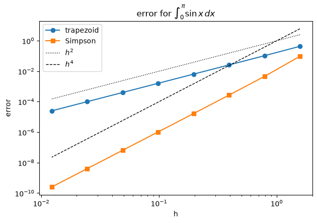

Integration with SymPy and SciPy#
The definite integral of \(f\) over \([a, b]\) is the signed area under the graph: $\( \int_a^b f(x)\,dx = F(b) - F(a), \qquad \text{where } F'(x) = f(x). \)$
There are two ways to compute it:
Exact (symbolic): find an antiderivative \(F\) with SymPy. Gives a formula, but not every function has one.
Numerical: add up values of \(f\) at sample points with SciPy. Always gives a number, but only approximately.
import sympy as sp
import numpy as np
import matplotlib.pyplot as plt
from scipy import integrate
from IPython.display import display
x = sp.symbols("x")
Part A. Exact integration with SymPy#
Step 1: indefinite integral#
sp.integrate(f, x) returns one antiderivative. SymPy does not add the constant \(+C\).
f = x**2 * sp.cos(x)
F = sp.integrate(f, x)
F
Always check: the derivative of \(F\) must give back \(f\).
sp.simplify(F.diff(x) - f)
Step 2: definite integral#
Pass a tuple (x, a, b) for the variable and the limits. Use exact numbers (sp.pi, sp.Rational(1, 2)), not floats.
I = sp.integrate(f, (x, 0, sp.pi))
display(I)
print("decimal:", I.evalf())
decimal: -6.28318530717959
Step 3: improper integrals#
An infinite limit is written with sp.oo.
display(sp.integrate(sp.exp(-x**2), (x, -sp.oo, sp.oo)))
display(sp.integrate(sp.sin(x)/x, (x, 0, sp.oo)))
Step 4: when there is no elementary formula#
Some antiderivatives exist only as special functions. For example \(\int e^{-x^2}\,dx\) uses the error function \(\operatorname{erf}\):
intval = sp.integrate(sp.exp(-x**2), x)
display(intval)
For others SymPy finds nothing and returns the integral unevaluated. We can still ask for a number with .evalf().
J = sp.integrate(sp.exp(sp.sin(x)), (x, 0, 1))
display(J)
print("decimal:", J.evalf())
decimal: 1.63186960841805
Part B. Numerical integration with SciPy#
Split \([a, b]\) into \(n\) equal pieces of width \(h = (b - a)/n\), with points \(x_0, x_1, \dots, x_n\). Each rule replaces \(f\) by something simple on each piece.
Test problem with a known answer: $\( \int_0^\pi \sin x \, dx = 2. \)$
Step 1: trapezoidal rule#
Join the points by straight lines: $\( \int_a^b f\,dx \approx \frac{h}{2}\Big(f_0 + 2f_1 + 2f_2 + \dots + 2f_{n-1} + f_n\Big). \)$
integrate.trapezoid(yv, x=xv) takes the sampled values, not the function.
xv = np.linspace(0, np.pi, 11) # 11 points, n = 10 pieces
yv = np.sin(xv)
T = integrate.trapezoid(yv, x=xv)
print("trapezoid:", T, " error:", abs(T - 2))
trapezoid: 1.9835235375094544 error: 0.016476462490545574
Step 2: Simpson’s rule#
Join the points in pairs of pieces by parabolas (\(n\) even): $\( \int_a^b f\,dx \approx \frac{h}{3}\Big(f_0 + 4f_1 + 2f_2 + 4f_3 + \dots + 4f_{n-1} + f_n\Big). \)$
Same data, much smaller error:
S = integrate.simpson(yv, x=xv)
print("simpson: ", S, " error:", abs(S - 2))
simpson: 2.0001095173150043 error: 0.00010951731500430384
Names. Older notes use integrate.trapz and integrate.simps. These were removed in SciPy 1.14; use trapezoid and simpson.
Step 3: how fast does the error shrink?#
Halve \(h\) and watch the error:
trapezoid: error \(\sim h^2\), so it drops by about \(4\);
Simpson: error \(\sim h^4\), so it drops by about \(16\).
On a log-log plot these are straight lines of slope \(2\) and \(4\).
ns = 2**np.arange(1, 9) # n = 2, 4, ..., 256 pieces
err_T, err_S = [], []
for n in ns:
xv = np.linspace(0, np.pi, n + 1)
err_T.append(abs(integrate.trapezoid(np.sin(xv), x=xv) - 2))
err_S.append(abs(integrate.simpson(np.sin(xv), x=xv) - 2))
h = np.pi / ns
fig, ax = plt.subplots(figsize=(7, 4.5))
ax.loglog(h, err_T, "o-", label="trapezoid")
ax.loglog(h, err_S, "s-", label="Simpson")
ax.loglog(h, h**2, "k:", lw=1, label=r"$h^2$")
ax.loglog(h, h**4, "k--", lw=1, label=r"$h^4$")
ax.set_xlabel("h"); ax.set_ylabel("error"); ax.legend()
ax.set_title(r"error for $\int_0^\pi \sin x\,dx$")
plt.show()

Step 4: Gaussian quadrature#
Trapezoid and Simpson use equally spaced points. Gauss-Legendre quadrature chooses the points \(x_i\) and weights \(w_i\) in the best possible way: $\( \int_a^b f\,dx \approx \sum_{i=1}^{n} w_i\, f(x_i). \)$
With \(n\) points it is exact for every polynomial of degree \(\le 2n - 1\).
integrate.fixed_quad(f, a, b, n=n) takes the function (not samples) and returns (value, None).
print(" points Gauss error Simpson error")
for n in [3, 5, 7, 9]:
G, _ = integrate.fixed_quad(np.sin, 0, np.pi, n=n)
xv = np.linspace(0, np.pi, n)
S = integrate.simpson(np.sin(xv), x=xv)
print(f"{n:6d} {abs(G - 2):.1e} {abs(S - 2):.1e}")
points Gauss error Simpson error
3 1.4e-03 9.4e-02
5 1.1e-07 4.6e-03
7 1.8e-12 8.6e-04
9 2.2e-16 2.7e-04
With the same number of points, Gauss wins by orders of magnitude. Its nodes are not equally spaced and its weights are not equal. On \([-1, 1]\) with \(n = 3\):
nodes, weights = np.polynomial.legendre.leggauss(3)
print("nodes: ", nodes)
print("weights:", weights)
nodes: [-0.77459667 0. 0.77459667]
weights: [0.55555556 0.88888889 0.55555556]
Step 5: quad, the everyday tool#
integrate.quad(f, a, b) uses adaptive Gaussian quadrature: it adds points where \(f\) is hard until the answer is accurate. It returns (value, error estimate) and accepts infinite limits np.inf.
val, err = integrate.quad(np.sin, 0, np.pi)
print("quad:", val, " estimated error:", err)
val, err = integrate.quad(lambda s: np.exp(-s**2), -np.inf, np.inf)
print("quad:", val, " exact sqrt(pi):", np.sqrt(np.pi))
quad: 2.0 estimated error: 2.220446049250313e-14
quad: 1.7724538509055159 exact sqrt(pi): 1.7724538509055159
It also handles the integral SymPy could not do in Part A:
val, err = integrate.quad(lambda s: np.exp(np.sin(s)), 0, 1)
print("quad: ", val)
print("SymPy:", J.evalf())
quad: 1.6318696084180513
SymPy: 1.63186960841805
Summary#
SymPy (exact) |
SciPy (numerical) |
|
|---|---|---|
input |
a formula |
sampled values, or a Python function |
call |
|
|
result |
exact number or formula |
float, approximate |
can fail? |
yes: returns |
no, but check the error |
rule |
uses |
error |
|---|---|---|
trapezoid |
straight lines, equal spacing |
\(\sim h^2\) |
Simpson |
parabolas, equal spacing |
\(\sim h^4\) |
Gauss-Legendre, \(n\) points |
best points and weights |
exact for degree \(\le 2n - 1\) |
Always check a symbolic antiderivative by differentiating it.
Use exact numbers in SymPy (
sp.pi,sp.Rational).Compare numerical answers with an exact one whenever you have it.
Exercises#
Syntax
task |
call |
|---|---|
exact, 1d |
|
samples |
|
trapezoid, Simpson |
|
Gauss |
|
Exercise 1. Compute $\( \int_0^1 x^2 e^{x} \, dx. \)$
(a) SymPy. Compute the exact value of the integral and its decimal.
(b) SciPy. Using \(11\) equally spaced points, compute the integral with trapezoid and simpson. Which one is closer to the exact value from (a)?
# Exercise 1
Exercise 2. Compute $\( \int_0^2 e^{-x^2} \, dx. \)$
(a) SymPy. Compute the integral. Which special function appears in the answer? Find its decimal value.
(b) SciPy. Compute the integral with fixed_quad using \(n = 4\) points, and with quad. Compare both with the value from (a).
# Exercise 2